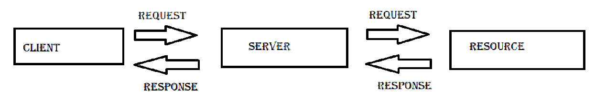
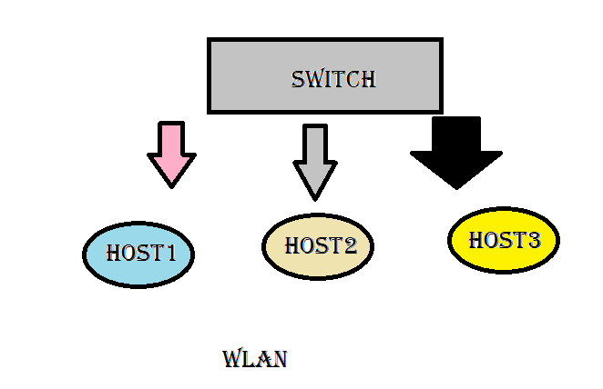

COMMUNICATION SYSTEMS
Networking systems enhances many devices to access data or COMPUTATION power outside of the device.
Ex: online games, Netflix, Amazon Prime, and cloud ide's, and many more
CLIENT SERVER MODEL

1)SINGLE SERVER, ONE OR MORE THAN ONE CLIENTS
2)SERVER PROVIDES SERVICE(REQUEST/RESPONSE) FOR CLIENTS
3)SERVER MANAGES RESOURCES
4)server responds to requests from clients
LOCAL AREA NETWORK (LAN)
1)LAN is a wired communication system used to transfer data within short range of distance
2)may be around the building
Rj45 plug in our laptop/ computer is used for this protocol
WIDE AREA NETWORK (WAN)

same as LAN but these are interconnected LAN's to increase the range of communication .
different LAN's are interconnected using switch'es.
i.e. router in your home is connected to different other routers and other devices globally to share information
example: internet
MANET (mobile adhoc network)
From the name itself we could say that MANET changes its communication range from one place to other.
Access points will be changing lets assume we're travelling with a mobile phone with us. Now its obvious that we get internet even if we're moving
and if we swithc hotspot on , our friend access data form our mobile. so now mobile has becom a manet
Ethernet is a common LAN protocol
Ethernet switch sends message to right input or output port.
HUB is used prior to SWITCH but it sends every request/response to al the ports
BRIDGE is a device that connects both SWITCHES & HUBS . BRIDGE speaks both LAN protocols